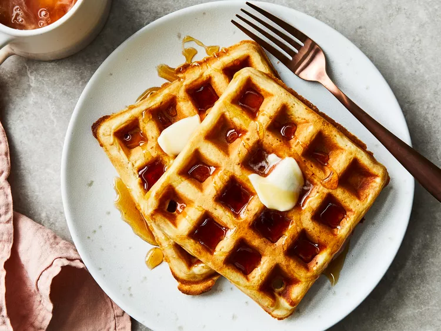

Simple Waffles

These waffles turn out lovely and crispy. Perfect for any day of the week!
Gather all ingredients.

Mix flour, salt, baking powder, and sugar together in a large bowl; set aside. Preheat waffle iron to desired temperature.

Beat eggs in a separate bowl; stir in milk, butter, and vanilla.

Pour milk mixture into flour mixture; beat until blended.

Ladle batter into a preheated waffle iron.

Cook waffles until golden and crisp.

Serve immediately and enjoy!
